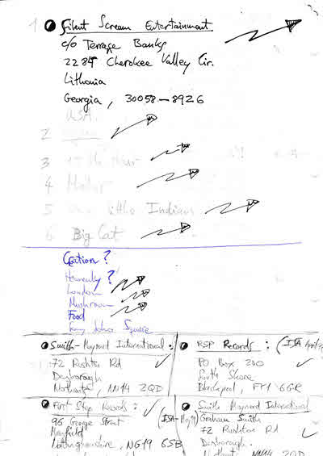
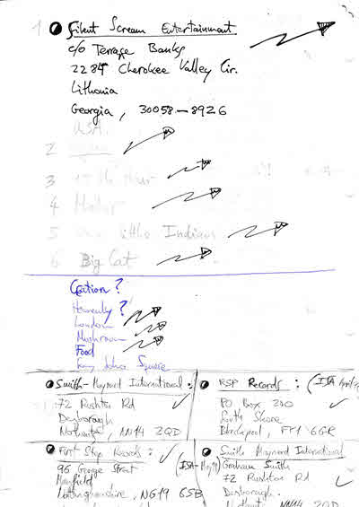
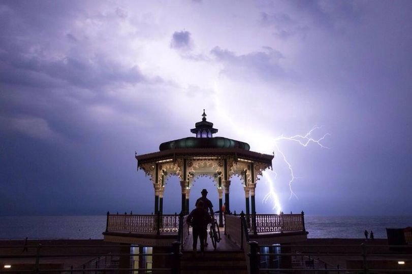
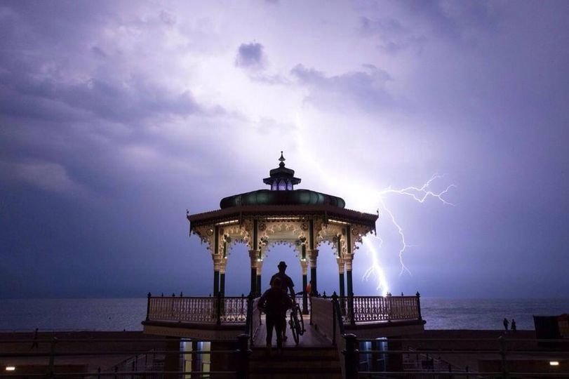
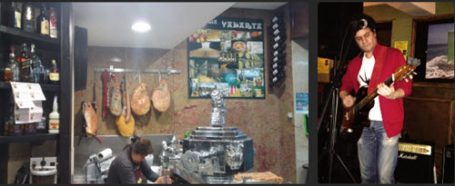
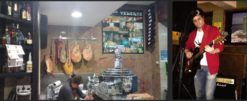
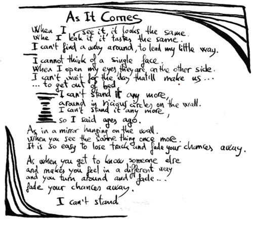

MB v0.4 by © Sound Spinning
Hungry and thirsty musicians - Brighton (UK)
soundspinning@hotmail.com
Demos (1998-2007)
MB v0.4 by © Sound Spinning


 



 


 


MB V0.4 Jul-2024 © Sound Spinning

Instrumental
Instrumental
The guy downtown mixes all the sounds,
He thinks is a clever way to calm down.
The guy downtown killed the blues that day,
Moving his fingers up and down again.
It’s funny how people spin around,
It doesn’t matter how people come about.
It’s funny how people come to you,
Thinking they can be really as cool as you.
Another day thinking of the same,
It squeezes the air against your face.
Pressure is coming down on you,
It leads your fingers up and down again.
It’s all about standing in the rain.
It’s all about standing in the sun.
It’s all about swinging with the wind.
It’s all about dancing with your mum..
It’s funny how waiting for the sun,
It turns out cloudy and misty soon.
It’s funny how it spins around
Another turn, welcome to the crowd.
It’s hard to tell when it comes or goes
While we spin around again.
It’s funny how it spins around,
Another turn, welcome to the crowd.
It’s all about…
I’ve seen them, walking down the street,
they swopt their lives for a bunch of notes.
I’ve seen them, walking down the street
they swept their lives for a bang, bang, bang.
I can smell them
breaking in the air,
Great big flavours
and luxurious bills,
and luxurious bills…
I can watch them
flashing on the screen,
Big fat smiles
remind me who I am
remind me who I am…
I’m gonna leave them, flying far away
find a place, to be a virgin mind.
I’m gonna leave them, flying far away
find a place, to be a virgin mind.
They look so confident, they cheat you straight away.
They carve their names, on gold grave stones,
On gold grave stones…
I wanna get my soul away
I wanna feel the air again
I wanna smash their heads
I wanna know if they feel or not
I feel my heart beat,
Running from my head to toe.
I feel my blood pressure,
Hitting all the walls.
I see you lying
I see you smiling too
(if) I close my eyes
I can feel the beat.
Come on you can hit me hard
Come on you can treat me badly X4
…and close my eyes and feel the beat
I change my mind
And see a direction.
But if I close my eyes,
I can feel the beat.
I try to be strong
And hold it right there.
Show some confidence
Start a new era.
Come on you… X 4
© Sound Spinning Beardyman, Ben Abis
Get OUT!! Get OUT!! X 2
We are gonna get you lean, come’n you know you want to.
We are going to get you, really really really high.
La la la a big tulip, come on and sit next to me.
You’re a girl you’ve got four leaps,
Open them all up all for me…
…wide and gaping,
no escaping!
CHIKKA!!
People walk in the sunshine, looking at what we’re doing.
Life with you in a flower bed,
I feel your flower…
…openiiiiiiiiiiing
ahhhhh to suuuuuunshine
there’s beauty.
Warning, warning, get out
There is danger signs going on,
Get out, get out, call it off.
GET OUT x many times
CALL IT OFF
Hey! I sell my soul for a can of beer
I lose my faith in the sacred book
And imagine you trying to understand.
Yeah! There is no way to became yourself
It is not written in a diary
Neither in a paperback, paperback…
Hey, you know I’m living under pressure
You know is more than a simple game.
Hey man, you know you’re living under pressure
If you don’t care it’s gonna burn you up.
Hey man, remember being as a human being
And how fun it used to be…
Hey you, remember being as a human being
And how far it is now from there.
Hey, you know what to live under control is
You know the strings keep you very tight
You know the pressure is gonna get too high.
Cut it, it’s hard to be just a second line
But it sets you free in the way of life
And collects your soul from the deepest hole.
Jeb [ vox ]
Instrumental